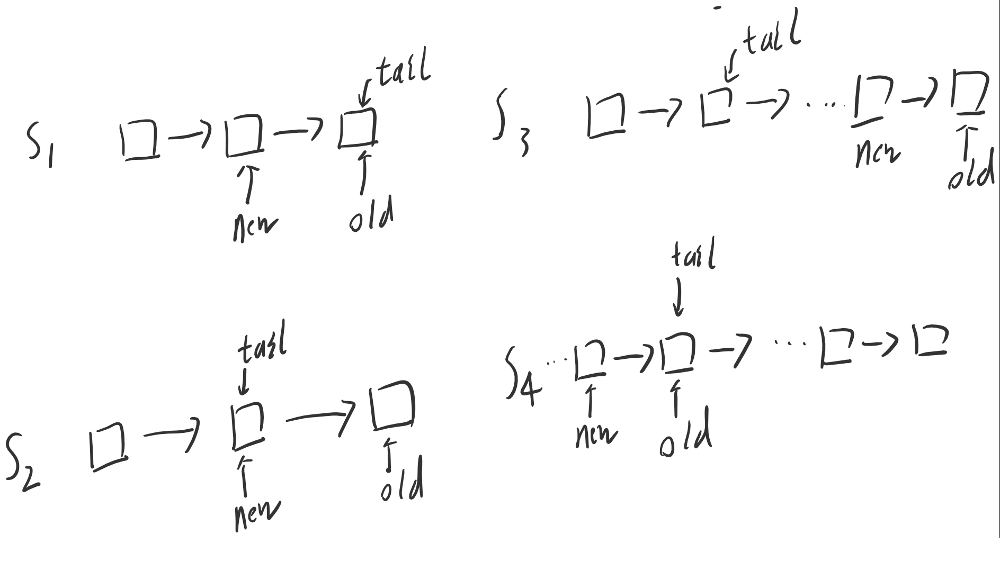

C++11中新增了
std::mutex类
该类表示普通的互斥锁, 不能递归使用
xxxxxxxxxx// std::mutexstd::mutex mtx;std::timed_mutex
该类表示定时互斥锁，不能递归使用。std::time_mutex比std::mutex多了两个成员函数
std::recursive_mutex
std::recursive_timed_mutex
互斥类的最重要成员函数是lock()和unlock()。在进入临界区时，执行lock()加锁操作，如果这时已经被其它线程锁住，则当前线程在此排队等待。退出临界区时，执行unlock()解锁操作。 用于互斥锁的RAII的类模板：更好的办法是采用”资源分配时初始化”(RAII)方法来加锁、解锁，这避免了在临界区中因为抛出异常或return等操作导致没有解锁就退出的问题。极大地简化了程序员编写Mutex相关的异常处理代码。C++11的标准库中提供了std::lock_guard类模板做mutex的RAII
xxxxxxxxxxstd::mutex mut; { std::lock_guard<std::mutex> lk(mut);} { std::unqiue_lock<std::mutex> lk(mut);}std::unique_lock 与std::lock_guard都能实现自动加锁与解锁功能，但是std::unique_lock要比std::lock_guard更灵活，但是更灵活的代价是占用空间相对更大一点且相对更慢一点。
它们提供的方法能保证具有原子性。这些方法是不可再分的，获取这些变量的值时，永远获得修改前的值或修改后的值，不会获得修改过程中的中间数值。
atomic_flag
其实和atomic
atomic
atomic
CAS的语义是“我认为V的值应该为A，如果是，那么将V的值更新为B，否则不修改并告诉V的值实际为多少”
xxxxxxxxxx//DEMO//------------------------------------------------------------std::atomic<int> aa(10);int aa1 = 10;aa.compare_exchange_weak(aa1, 11);//执行结果，aa:11, aa1:10,语句返回true//------------------------------------------------------------std::atomic<int> aa(10);int aa1 = 12;aa.compare_exchange_weak(aa1, 11);//执行结果，aa:10, aa1:10,语句返回falsexxxxxxxxxx// std::cout// std::atomic// std::thread// std::vector// a simple global linked list:struct Node { int value; Node* next; };std::atomic<Node*> list_head (nullptr);void append (int val) { // append an element to the list Node* oldHead = list_head; Node* newNode = new Node {val,oldHead}; // what follows is equivalent to: list_head = newNode, but in a thread-safe way: while (!list_head.compare_exchange_weak(oldHead,newNode)) { newNode->next = oldHead; }}void pop(int& val){ Node* oldtail = list_tail; Node* newtail = odltail->front(); while(!list_tail.compare_exchange_weak(oldtail,newtail)){ newtail = oldtail->front(); } list_tail->next = NULL; val = oldtail->val;}流程说明,任务出队 
锁
CAS
xxxxxxxxxx